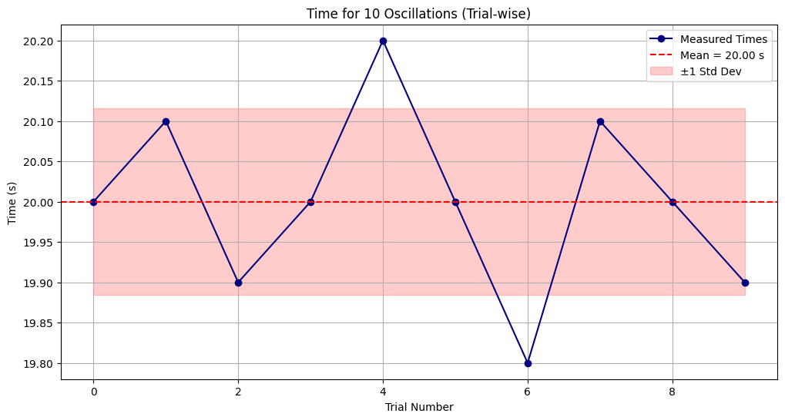
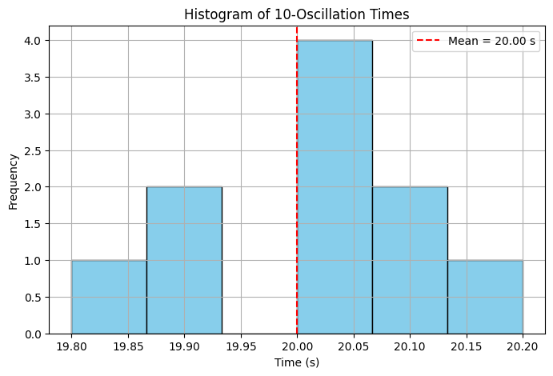
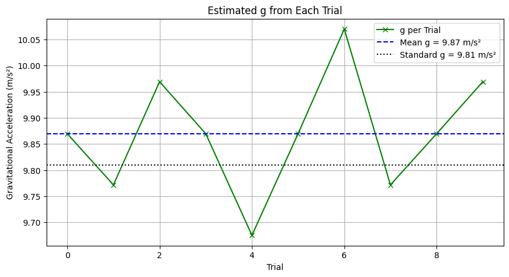

Problem 1
📘 Measuring Earth's Gravitational Acceleration with a Pendulum
🔬 Objective
The aim is to estimate Earth's gravitational acceleration \( g \) using a simple pendulum and analyze how uncertainties in measurement affect the final result. This classic physics experiment demonstrates the relationship between pendulum period and gravitational pull using the formula:
Where: - \( L \) is the length of the pendulum - \( T \) is the time period of one complete oscillation
🧪 Materials & Setup
- String Length: ~1.00 m
- Pendulum Mass: Any small weight (e.g., keys, washers)
- Timer: Stopwatch or phone timer
- Length Measurement Tool: Ruler or tape (±0.5 cm typical resolution)
- The pendulum is released at a small angle (<15°) and swings freely.
📏 Measurements
We perform 10 independent trials, each recording the time for 10 oscillations. This reduces the error caused by human timing.
# Measurement Data: 10 trials of 10 oscillations each
T_10_trials = np.array([20.0, 20.1, 19.9, 20.0, 20.2, 20.0, 19.8, 20.1, 20.0, 19.9])
From this data: - Compute mean \( \bar{T}_{10} \) - Find period \( T = \bar{T}_{10} / 10 \) - Compute standard deviation to estimate uncertainty
📈 Plot 1: Time for 10 Oscillations (Trial-wise)
This line plot helps you identify how consistent your timing was across trials. It also visualizes the spread of data and standard deviation range.

📊 Plot 2: Histogram of Time Measurements
The histogram gives a sense of frequency distribution in the measurements — a useful way to visually confirm normality or bias in timing.

📉 Plot 3: Estimated \( g \) per Trial
If we hypothetically used each trial on its own (without averaging), we’d get different values of \( g \). This plot shows the variation, reinforcing why averaging is important.

📐 Calculations Summary
- Average period \( T \):
- Standard deviation of the mean:
- Gravitational acceleration:
- Uncertainty in \( g \):
🧠 Analysis
- Measurement Resolution:
- The smallest increment on your measuring tape determines \( \Delta L \).
-
A 0.5 cm resolution → uncertainty \( \Delta L = \pm 0.005 \, \text{m} \)
-
Timing Error:
- Human reaction time is ~0.2 s
-
Measuring 10 swings minimizes this by averaging out fluctuations
-
Comparison with Standard:
- If your result is within ±Δg of 9.81 m/s², the experiment is successful.